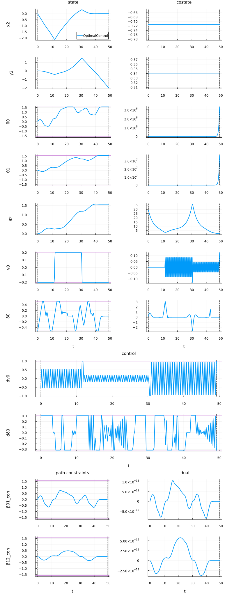
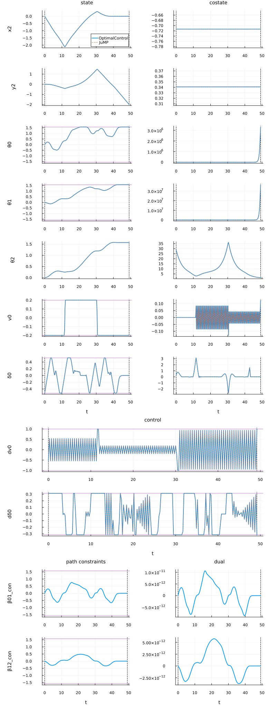
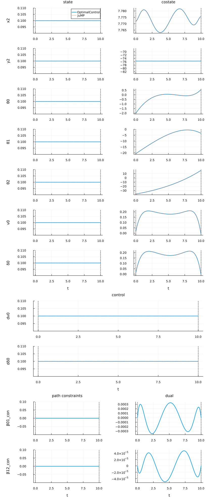

Truck trailer
This problem models the minimum-time maneuvering of a truck with two trailers while respecting steering, velocity, and articulation constraints. The goal is to move the vehicle from an initial configuration to a target position and orientation while minimizing final time and reducing excessive trailer articulation.
System Description
The system has 7 states and 2 controls:
States:
\[x_2, y_2\]
: position of the rear trailer axle\[\theta_0, \theta_1, \theta_2\]
: orientations of the truck and two trailers\[v_0\]
: longitudinal velocity of the truck\[\delta_0\]
: steering angle of the truck
Controls:
\[\dot{v}_0\]
: acceleration of the truck\[\dot{\delta}_0\]
: steering rate
Auxiliary variables:
\[\beta_{01} = \theta_0 - \theta_1\]
\[\beta_{12} = \theta_1 - \theta_2\]
Constraints
- Time horizon: $1 \le t_f \le 1000$
- State constraints:
\[-\pi/2 \le \theta_0(t), \theta_1(t) \le \pi/2, \quad -\frac{0.2 v_{\rm max}}{1} \le v_0(t) \le \frac{0.2 v_{\rm max}}{1}, \quad -\pi/6 \le \delta_0(t) \le \pi/6\]
- Control constraints:
\[-1 \le \dot{v}_0(t) \le 1, \quad -\pi/10 \le \dot{\delta}_0(t) \le \pi/10\]
- Path constraints:
\[-\pi/2 \le \beta_{01}(t), \beta_{12}(t) \le \pi/2\]
- Boundary conditions:
\[x_2(0) = x_{2,0}, \quad y_2(0) = y_{2,0}, \quad \theta_0(0) = \theta_{0,0}, \quad \theta_1(0) = \theta_{1,0}, \quad \theta_2(0) = \theta_{2,0}\]
\[x_2(t_f) = x_{2,f}, \quad y_2(t_f) = y_{2,f}, \quad \theta_2(t_f) = \theta_{2,f}, \quad \beta_{01}(t_f) = \theta_{0,f} - \theta_{1,f}, \quad \beta_{12}(t_f) = \theta_{1,f} - \theta_{2,f}\]
Dynamics
The truck-trailer kinematics are governed by
\[\begin{aligned} \dot{\theta}_0 &= \frac{v_0}{L_0} \tan\delta_0, \\ \dot{\theta}_1 &= \frac{v_0}{L_1} \sin\beta_{01} - \frac{M_0}{L_1} \cos\beta_{01} \, \dot{\theta}_0, \\ v_1 &= v_0 \cos\beta_{01} + M_0 \sin\beta_{01} \, \dot{\theta}_0, \\ \dot{\theta}_2 &= \frac{v_1}{L_2} \sin\beta_{12} - \frac{M_1}{L_2} \cos\beta_{12} \, \dot{\theta}_1, \\ v_2 &= v_1 \cos\beta_{12} + M_1 \sin\beta_{12} \, \dot{\theta}_1, \\ \dot{x}_2 &= v_2 \cos\theta_2, \quad \dot{y}_2 = v_2 \sin\theta_2, \\ \dot{v}_0 &= \dot{v}_0^{\rm control}, \quad \dot{\delta}_0 = \dot{\delta}_0^{\rm control} \end{aligned}\]
where $L_i$ and $M_i$ are the vehicle and trailer geometric parameters.
Objective
The goal is to minimize the final time while reducing large trailer articulation angles:
\[J = t_f + \int_0^{t_f} (\beta_{01}^2(t) + \beta_{12}^2(t)) \, dt \to \min\]
References
- Vanroye, L., Sathya, A., De Schutter, J., & Decré, W. (2023). FATROP: A Fast Constrained Optimal Control Problem Solver for Robot Trajectory Optimization and Control. arXiv preprint arXiv:2303.16746. Retrieved from https://arxiv.org/pdf/2303.16746
- Kretzschmar, H., & Burgard, W. (2019). Optimal motion planning for truck and trailer systems: A review. IEEE Transactions on Intelligent Vehicles, 4(3), 256–271.
- Falcone, P., Borrelli, F., Asgari, J., Tseng, H. E., & Hrovat, D. (2007). Predictive active steering control for autonomous vehicle systems. IEEE Transactions on Control Systems Technology, 15(3), 566–580.
Packages
Import all necessary packages and define DataFrames to store information about the problem and resolution results.
using OptimalControlProblems # to access the Beam model
using OptimalControl # to import the OptimalControl model
using NLPModelsIpopt # to solve the model with Ipopt
import DataFrames: DataFrame # to store data
using NLPModels # to retrieve data from the NLP solution
using Plots # to plot the trajectories
using Plots.PlotMeasures # for leftmargin, bottommargin
using JuMP # to import the JuMP model
using Ipopt # to solve the JuMP model with Ipopt
data_pb = DataFrame( # to store data about the problem
Problem=Symbol[],
Grid_Size=Int[],
Variables=Int[],
Constraints=Int[],
)
data_re = DataFrame( # to store data about the resolutions
Model=Symbol[],
Flag=Any[],
Iterations=Int[],
Objective=Float64[],
)OptimalControl model
Solve the problem
Import the OptimalControl problem and solve it to obtain the solution.
# import model
docp = truck_trailer(OptimalControlBackend())
nlp_oc = nlp_model(docp)
# solve
nlp_sol = NLPModelsIpopt.ipopt(
nlp_oc;
print_level=4,
tol=1e-8,
mu_strategy="adaptive",
sb="yes",
)
# build an optimal control solution
ocp_sol = build_ocp_solution(docp, nlp_sol)Total number of variables............................: 1810
variables with only lower bounds: 0
variables with lower and upper bounds: 1207
variables with only upper bounds: 0
Total number of equality constraints.................: 1410
Total number of inequality constraints...............: 402
inequality constraints with only lower bounds: 0
inequality constraints with lower and upper bounds: 402
inequality constraints with only upper bounds: 0
In iteration 329, 6 Slacks too small, adjusting variable bounds
In iteration 330, 10 Slacks too small, adjusting variable bounds
Number of Iterations....: 331
(scaled) (unscaled)
Objective...............: 5.9230286957671595e+01 5.9230286957671595e+01
Dual infeasibility......: 5.5577428522454297e-07 5.5577428522454297e-07
Constraint violation....: 1.9960504360483355e-09 1.9960504360483355e-09
Variable bound violation: 1.5707963374467226e-08 1.5707963374467226e-08
Complementarity.........: 3.0356333426326606e-10 3.0356333426326606e-10
Overall NLP error.......: 1.9960504360483355e-09 5.5577428522454297e-07
Number of objective function evaluations = 383
Number of objective gradient evaluations = 331
Number of equality constraint evaluations = 383
Number of inequality constraint evaluations = 383
Number of equality constraint Jacobian evaluations = 333
Number of inequality constraint Jacobian evaluations = 333
Number of Lagrangian Hessian evaluations = 331
Total seconds in IPOPT = 7.088
EXIT: Optimal Solution Found.Compute state, control, objective, and iteration data for comparison:
t_oc = time_grid(ocp_sol)
x_oc = state(ocp_sol).(t_oc)
u_oc = control(ocp_sol).(t_oc)
o_oc = objective(ocp_sol)
v_oc = variable(ocp_sol)
i_oc = nlp_sol.iterStore and print the data
Store the following data about the problem:
push!(data_pb,
(
Problem=:truck_trailer,
Grid_Size=metadata[:truck_trailer][:N],
Variables=get_nvar(nlp_oc),
Constraints=get_ncon(nlp_oc),
)
)| Row | Problem | Grid_Size | Variables | Constraints |
|---|---|---|---|---|
| Symbol | Int64 | Int64 | Int64 | |
| 1 | truck_trailer | 200 | 1810 | 1812 |
And store the following data about the resolution:
push!(data_re,
(
Model=:OptimalControl,
Flag=nlp_sol.status,
Iterations=nlp_sol.iter,
Objective=objective(ocp_sol),
)
)| Row | Model | Flag | Iterations | Objective |
|---|---|---|---|---|
| Symbol | Any | Int64 | Float64 | |
| 1 | OptimalControl | first_order | 331 | 59.2303 |
Plot the solution
Visualise states, costates, and controls for the OptimalControl solution:
x_vars = metadata[:truck_trailer][:state_name]
u_vars = metadata[:truck_trailer][:control_name]
n = length(x_vars) # number of states
m = length(u_vars) # number of controls
plt = plot(
ocp_sol;
state_style=(color=1,),
costate_style=(color=1, legend=:none),
control_style=(color=1, legend=:none),
path_style=(color=1, legend=:none),
dual_style=(color=1, legend=:none),
size=(816, 240*(n+m)),
label="OptimalControl",
leftmargin=20mm,
)
for i in 2:n
plot!(plt[i]; legend=:none)
end
JuMP model
Solve the problem
Import the JuMP model and solve it.
# import model
nlp_jp = truck_trailer(JuMPBackend())
# solve
set_optimizer(nlp_jp, Ipopt.Optimizer)
set_optimizer_attribute(nlp_jp, "print_level", 4)
set_optimizer_attribute(nlp_jp, "tol", 1e-8)
set_optimizer_attribute(nlp_jp, "mu_strategy", "adaptive")
set_optimizer_attribute(nlp_jp, "linear_solver", "mumps")
set_optimizer_attribute(nlp_jp, "sb", "yes")
optimize!(nlp_jp)Total number of variables............................: 1810
variables with only lower bounds: 0
variables with lower and upper bounds: 1207
variables with only upper bounds: 0
Total number of equality constraints.................: 1410
Total number of inequality constraints...............: 402
inequality constraints with only lower bounds: 0
inequality constraints with lower and upper bounds: 402
inequality constraints with only upper bounds: 0
In iteration 382, 4 Slacks too small, adjusting variable bounds
In iteration 383, 4 Slacks too small, adjusting variable bounds
In iteration 384, 5 Slacks too small, adjusting variable bounds
In iteration 385, 5 Slacks too small, adjusting variable bounds
In iteration 386, 4 Slacks too small, adjusting variable bounds
In iteration 387, 2 Slacks too small, adjusting variable bounds
In iteration 388, 2 Slacks too small, adjusting variable bounds
In iteration 389, 2 Slacks too small, adjusting variable bounds
In iteration 418, 1 Slack too small, adjusting variable bound
In iteration 419, 8 Slacks too small, adjusting variable bounds
In iteration 420, 10 Slacks too small, adjusting variable bounds
Number of Iterations....: 421
(scaled) (unscaled)
Objective...............: 5.9230286794623986e+01 5.9230286794623986e+01
Dual infeasibility......: 6.8771546322856768e-07 6.8771546322856768e-07
Constraint violation....: 1.7621106795928654e-09 1.7621106795928654e-09
Variable bound violation: 1.5707974920786683e-08 1.5707974920786683e-08
Complementarity.........: 3.8811129932492257e-10 3.8811129932492257e-10
Overall NLP error.......: 2.1497851467150747e-09 6.8771546322856768e-07
Number of objective function evaluations = 451
Number of objective gradient evaluations = 421
Number of equality constraint evaluations = 451
Number of inequality constraint evaluations = 451
Number of equality constraint Jacobian evaluations = 423
Number of inequality constraint Jacobian evaluations = 423
Number of Lagrangian Hessian evaluations = 421
Total seconds in IPOPT = 51.518
EXIT: Optimal Solution Found.For the numerical comparison, define:
t_jp = time_grid(:truck_trailer, nlp_jp)
x_jp = state(:truck_trailer, nlp_jp).(t_jp)
u_jp = control(:truck_trailer, nlp_jp).(t_jp)
o_jp = objective_value(nlp_jp)
v_jp = variable(:truck_trailer, nlp_jp)
i_jp = barrier_iterations(nlp_jp)Store and print the data
Store the results of the resolution:
push!(data_re,
(
Model=:JuMP,
Flag=termination_status(nlp_jp),
Iterations=barrier_iterations(nlp_jp),
Objective=objective_value(nlp_jp),
)
)| Row | Model | Flag | Iterations | Objective |
|---|---|---|---|---|
| Symbol | Any | Int64 | Float64 | |
| 1 | OptimalControl | first_order | 331 | 59.2303 |
| 2 | JuMP | LOCALLY_SOLVED | 421 | 59.2303 |
Plot the solution
Overlay the JuMP solution on the previous plots:
t = time_grid(:truck_trailer, nlp_jp) # t0, ..., tN = tf
x = state(:truck_trailer, nlp_jp) # function of time
u = control(:truck_trailer, nlp_jp) # function of time
p = costate(:truck_trailer, nlp_jp) # function of time
for i in 1:n # state
label = i == 1 ? "JuMP" : :none
plot!(plt[i], t, t -> x(t)[i]; color=2, linestyle=:dash, label=label)
end
for i in 1:n # costate
plot!(plt[n+i], t, t -> -p(t)[i]; color=2, linestyle=:dash, label=:none)
end
for i in 1:m # control
plot!(plt[2n+i], t, t -> u(t)[i]; color=2, linestyle=:dash, label=:none)
end
Initial guess
The initial guess can also be visualised by running the solver with max_iter=0.
Unfold to see the code for plotting the initial guess.
function plot_initial_guess()
# import OptimalControl model
docp = truck_trailer(OptimalControlBackend())
nlp_oc = nlp_model(docp)
# solve
nlp_sol = NLPModelsIpopt.ipopt(
nlp_oc;
max_iter=0,
print_level=5,
tol=1e-8,
mu_strategy="adaptive",
sb="yes",
)
# build an optimal control solution
ocp_sol = build_ocp_solution(docp, nlp_sol)
# plot the OptimalControl solution
plt = plot(
ocp_sol;
state_style=(color=1,),
costate_style=(color=1, legend=:none),
control_style=(color=1, legend=:none),
path_style=(color=1, legend=:none),
dual_style=(color=1, legend=:none),
size=(816, 220*(n+m)),
label="OptimalControl",
leftmargin=20mm,
)
for i in 2:n
plot!(plt[i]; legend=:none)
end
# import JuMP model
nlp_jp = truck_trailer(JuMPBackend())
# solve
set_optimizer(nlp_jp, Ipopt.Optimizer)
set_optimizer_attribute(nlp_jp, "max_iter", 0)
set_optimizer_attribute(nlp_jp, "print_level", 5)
set_optimizer_attribute(nlp_jp, "tol", 1e-8)
set_optimizer_attribute(nlp_jp, "mu_strategy", "adaptive")
set_optimizer_attribute(nlp_jp, "linear_solver", "mumps")
set_optimizer_attribute(nlp_jp, "sb", "yes")
optimize!(nlp_jp)
# plot
t = time_grid(:truck_trailer, nlp_jp) # t0, ..., tN = tf
x = state(:truck_trailer, nlp_jp) # function of time
u = control(:truck_trailer, nlp_jp) # function of time
p = costate(:truck_trailer, nlp_jp) # function of time
for i in 1:n # state
label = i == 1 ? "JuMP" : :none
plot!(plt[i], t, t -> x(t)[i]; color=2, linestyle=:dash, label=label)
end
for i in 1:n # costate
plot!(plt[n+i], t, t -> -p(t)[i]; color=2, linestyle=:dash, label=:none)
end
for i in 1:m # control
plot!(plt[2n+i], t, t -> u(t)[i]; color=2, linestyle=:dash, label=:none)
end
return plt
endplot_initial_guess()
Numerical comparison
Compare OptimalControl and JuMP solutions in terms of iterations, $L^2$ norms, and objective values.
Unfold to get the code of the numerical comparison.
v_vars = metadata[:truck_trailer][:variable_name]
function L2_norm(T, X)
# T and X are supposed to be one dimensional
s = 0.0
for i in 1:(length(T) - 1)
s += 0.5 * (X[i]^2 + X[i + 1]^2) * (T[i + 1]-T[i])
end
return √(s)
end
function numerical_comparison()
println("┌─ ", "truck_trailer")
println("│")
# number of iterations
println("├─ Number of iterations")
println("│")
println("│ OptimalControl : ", i_oc)
println("│ JuMP : ", i_jp)
println("│")
# state
for i in eachindex(x_vars)
xi_oc = [x_oc[k][i] for k in eachindex(t_oc)]
xi_jp = [x_jp[k][i] for k in eachindex(t_jp)]
L2_oc = L2_norm(t_oc, xi_oc)
L2_jp = L2_norm(t_oc, xi_jp)
L2_ae = L2_norm(t_oc, xi_oc-xi_jp)
L2_re = L2_ae/(0.5*(L2_oc + L2_jp))
println("├─ State $(x_vars[i]) (L2 norm)")
println("│")
println("│ OptimalControl : ", L2_oc)
println("│ JuMP : ", L2_jp)
println("│ Absolute error : ", L2_ae)
println("│ Relative error : ", L2_re)
println("│")
end
# control
for i in eachindex(u_vars)
ui_oc = [u_oc[k][i] for k in eachindex(t_oc)]
ui_jp = [u_jp[k][i] for k in eachindex(t_jp)]
L2_oc = L2_norm(t_oc, ui_oc)
L2_jp = L2_norm(t_oc, ui_jp)
L2_ae = L2_norm(t_oc, ui_oc-ui_jp)
L2_re = L2_ae/(0.5*(L2_oc + L2_jp))
println("├─ Control $(u_vars[i]) (L2 norm)")
println("│")
println("│ OptimalControl : ", L2_oc)
println("│ JuMP : ", L2_jp)
println("│ Absolute error : ", L2_ae)
println("│ Relative error : ", L2_re)
println("│")
end
# control
if !isnothing(v_vars)
for i in eachindex(v_vars)
vi_oc = v_oc[i]
vi_jp = v_jp[i]
vi_ae = abs(vi_oc-vi_jp)
vi_re = vi_ae/(0.5*(abs(vi_oc) + abs(vi_jp)))
println("├─ Variable $(v_vars[i])")
println("│")
println("│ OptimalControl : ", vi_oc)
println("│ JuMP : ", vi_jp)
println("│ Absolute error : ", vi_ae)
println("│ Relative error : ", vi_re)
println("│")
end
end
# objective
o_ae = abs(o_oc-o_jp)
o_re = o_ae/(0.5*(abs(o_oc) + abs(o_jp)))
println("├─ objective")
println("│")
println("│ OptimalControl : ", o_oc)
println("│ JuMP : ", o_jp)
println("│ Absolute error : ", o_ae)
println("│ Relative error : ", o_re)
println("│")
println("└─")
return nothing
endnumerical_comparison()┌─ truck_trailer
│
├─ Number of iterations
│
│ OptimalControl : 331
│ JuMP : 421
│
├─ State x2 (L2 norm)
│
│ OptimalControl : 6.106855382484992
│ JuMP : 6.106855352729481
│ Absolute error : 5.984788178653808e-8
│ Relative error : 9.800114491656519e-9
│
├─ State y2 (L2 norm)
│
│ OptimalControl : 5.208044947230821
│ JuMP : 5.208044932023807
│ Absolute error : 9.424374924133926e-8
│ Relative error : 1.8095801847685922e-8
│
├─ State θ0 (L2 norm)
│
│ OptimalControl : 7.908538546842294
│ JuMP : 7.9085386841966665
│ Absolute error : 1.5041078182082103e-6
│ Relative error : 1.901878325859842e-7
│
├─ State θ1 (L2 norm)
│
│ OptimalControl : 7.409018418020309
│ JuMP : 7.409018479532676
│ Absolute error : 1.6789458656186566e-7
│ Relative error : 2.2660840666362675e-8
│
├─ State θ2 (L2 norm)
│
│ OptimalControl : 7.18330347204148
│ JuMP : 7.18330347946148
│ Absolute error : 8.54317822615001e-8
│ Relative error : 1.1893104969028568e-8
│
├─ State v0 (L2 norm)
│
│ OptimalControl : 1.3946453632211446
│ JuMP : 1.3946453603247129
│ Absolute error : 4.011248329505445e-8
│ Relative error : 2.876178015898025e-8
│
├─ State δ0 (L2 norm)
│
│ OptimalControl : 2.0162432557932344
│ JuMP : 2.0162431308493987
│ Absolute error : 3.679031822150504e-5
│ Relative error : 1.824696462379674e-5
│
├─ Control dv0 (L2 norm)
│
│ OptimalControl : 4.596343511977181
│ JuMP : 4.59634142908445
│ Absolute error : 2.4463842053072597e-6
│ Relative error : 5.322458500410078e-7
│
├─ Control dδ0 (L2 norm)
│
│ OptimalControl : 1.8560274200886517
│ JuMP : 1.856040567584104
│ Absolute error : 0.0016144921180696054
│ Relative error : 0.000869861286717324
│
├─ Variable tf
│
│ OptimalControl : 49.1837185971737
│ JuMP : 49.183718391351725
│ Absolute error : 2.0582197635121702e-7
│ Relative error : 4.184758343865891e-9
│
├─ objective
│
│ OptimalControl : 59.230286957671595
│ JuMP : 59.230286794623986
│ Absolute error : 1.6304760919183536e-7
│ Relative error : 2.7527742611271247e-9
│
└─